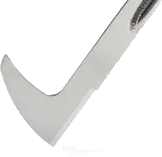

|
|
|
Crack Weeder |
|

Crack Weeder |
The Crack Weeder is used for uprooting weeds in bricks and other minor activities in the garden.
There can be a debate about how sharp the back side knife should be. Notes regarding this are below in the Notes & Comments section. |

Edge Angles |
|
Dandelions, like all things in nature, are beautiful when you take the time to pay attention to them. June Stoyer |
||
|
General Guidelines |
|
|---|---|
| α |
Notes |
| 35° - 40° |
This edge will get banged around a bit, so it could even be ground up to 45° or 50°. |

The gardener needs to decide how sharp the back edge of the Crack Weeder should be based on the activities for which the tool will be used. But in general, it should less sharp than tools like hoes.
The Tormek SG-250 grindstone works well for sharpening this tool. Also, grinding the outside edge using the Tormek's vertical position (with the grindstone rotating towards the edge) is recommended.
Because the blade is curved, the KS-123 does not work for this application.
Using a bench or angle grinder is not recommended as this will surely overheat the tool, removing the temper from the edge. Additionally, the shaping of the edge is difficult to control.

KJ-45 Bottom Stop
If using a Tormek with the KJ-45 jig, the bottom stop is recommended (as indicated in the picture to the left). This makes setting the angle far easier.
The picture on the right shows a Japanese weeding sickle being sharpened on a Tormek (the blue piece behind the grinding wheel is a drip tray).
If you choose to use a machinist’s hand file,
The micro bevel makes the resharpening of this tool easier. If you sharpen the tool using a machinist's hand file, this is recommended. It is less critical if you use a Tormek grinder for the sharpening.